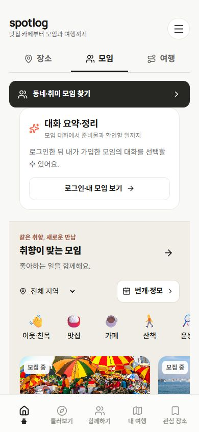
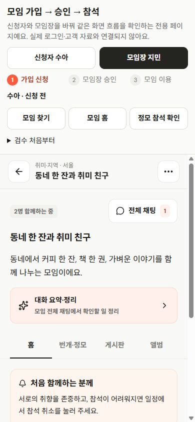
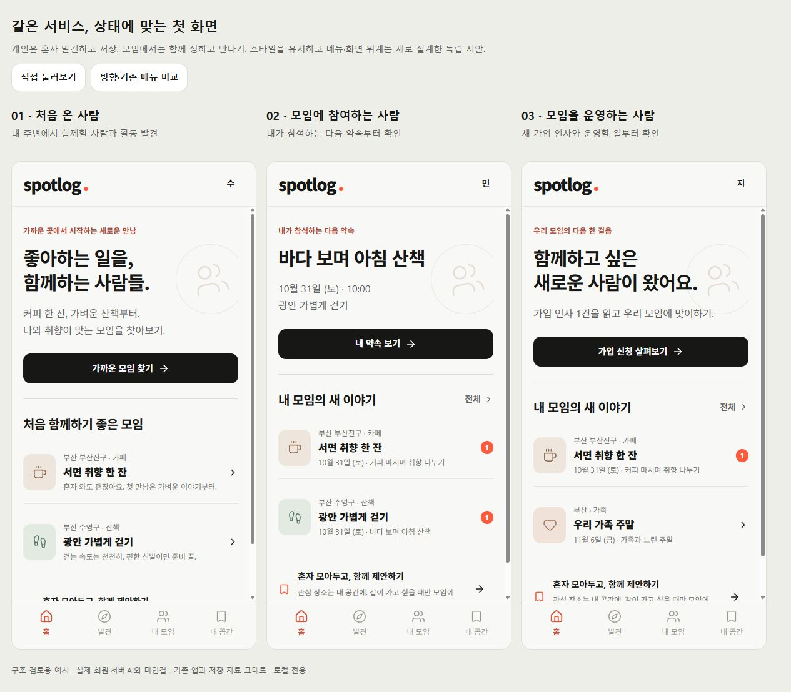
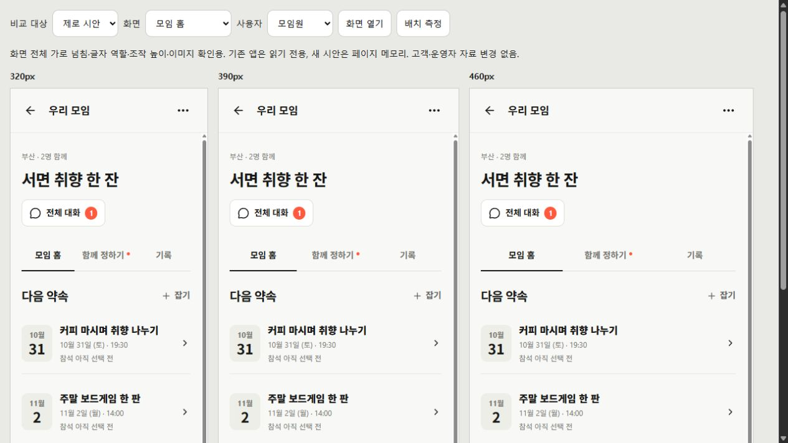

처음 온 사람
지역·관심사로 발견 → 장소 저장 또는 모임 소개 확인. 여행 생성·가입을 탐색의 선행 조건으로 두지 않기.
SPOTLOG · 방향성·레이아웃 재검토
현재 기능의 방향은 맞음. 저장·모임·투표·약속·채팅·기록이라는 재료는 이미 있음. 우선순위와 연결 방식, 화면 구성에는 여행 중심의 잔재가 남음.
기존 메뉴·화면을 유지해야 한다는 전제 없이 재설계. 색·타이포·간격·터치 기준은 스타일가이드에서 유지. 기존 데이터와 개인 여행 원본은 별도 보호.
혼자 발견하고, 함께 정하고,
다시 모이는 일상·모임 서비스.
여행은 필요할 때 깊게 확장.
독립 시안 준비·로컬 화면 검수 완료. 기존 제품을 교체한 화면은 아님. 예시 계정·대화는 페이지 메모리에서만 동작하며 실제 서비스 연결과 구분.
현재 화면 실측 · 오류보다 우선순위·밀도 문제. 390×844에서 홈 모임의 첫 모집 카드는 화면 위에서 695px, 모임 찾기는 487px에 등장. 홈의 주 버튼은 좌우 18px, 아래 AI·로그인 카드는 38px 안쪽으로 기준선이 다름. 모임 홈은 제목이 반복되고 대화·AI·소개 다음에 다가오는 약속이 배치됨.
현재 앱의 측정된 가로 넘침은 0px. 넘침이 없다는 사실과 첫 행동을 쉽게 찾는지는 별개. 이 진단은 기존 화면에 대한 판단이며, 아래 독립 시안의 로컬 검수 결과와 구분.


저장 카드의 ‘모임에 제안’에서 시작. 후보를 고른 뒤 담당자가 ‘약속으로 만들기’. 다녀온 기록은 개인과 모임에 선택해서 남기고 다음 제안으로 연결.
투표를 모든 약속의 필수 단계로 강제하지 않기. 이미 정한 가족 약속은 바로 만들기. 투표 확정·모임 가입·정모 참석·예약 완료는 서로 다른 상태.
지역·관심사로 발견 → 장소 저장 또는 모임 소개 확인. 여행 생성·가입을 탐색의 선행 조건으로 두지 않기.
새 제안·내 투표 → 다가오는 약속 → 대화·준비 → 내 후기. 자기 제안은 수정, 확정 일정은 담당자에게 변경 제안.
가입 신청·미정 제안 확인 → 선택 결과를 약속으로 확정 → 공지·참여·신고 처리 → 다음 만남 운영.
홈은 역할에 맞는 다음 행동부터. 모임 안에서는 함께 정할 일과 약속을 먼저 보고, 해당 모임·약속의 대화로 이동. 상단 브랜드·여백·카드 기준선은 같은 규칙 사용.


왼쪽은 공식 자료에서 확인한 내용, 오른쪽은 스팟로그의 전략적 해석·제안. 외부 서비스와 동일한 기능·성과를 보장하는 의미는 아님.
| 공식 근거 | 확인한 강점 | 우리 화면의 행동 전환 · 제안 |
|---|---|---|
| 소모임 도움말 | 지속 모임과 개별 정모, 가입과 참여 구분. 관심사·지역 조건. | 발견에서 적합한 모임 찾기 → 가입 → 별도 약속 선택. 한 모임에 여러 만남과 기록 축적. |
| 당근 보도자료 2024-07-31 | 동네·관심사 기반 교류, 반복 일정·자주 모이는 장소·그룹 앨범. | 멀리 떠나는 여행보다 자주 만나는 장소와 다음 약속 우선. 후기에서 ‘다음에도 함께’로 복귀. |
| 카카오톡 소개 2025-09-23 | 대화 요약과 안 읽은 대화 미리보기 소개. 오픈채팅 커뮤니티는 별도 항목. | 밀린 대화 → 요약·준비사항 후보 → 원문 확인 → 담당자 승인 반영. 대화를 실제 준비 행동으로 연결. |
공식 자료 확인일 2026-10-30. 카카오 자료를 ‘모든 오픈채팅방에서 요약 가능’으로 확대 해석하지 않음.
실제 회원·권한·공동 자료 동기화. 초대 딥링크와 수락 후 복귀. 신고 접수→처리, 알림 전달·실패 확인. 로컬 예시와 실제 완료를 구분.
후기→다음 만남, 모임 홍보의 실제 공개·운영 연결, AI 대화 요약·준비 후보. 기존 로컬 홍보·기록 화면을 없는 기능처럼 다시 만들지 않기.
AI 역할 · 대화 요약 + 준비사항 후보 + 원문 근거 + 명시 승인 반영. 예약·참석·일정을 자동 확정하지 않기. 현재 원문 모아보기와 고정 예시는 실제 LLM 분석이 아님.
기존 메뉴·화면 유지 제약은 없음. 데이터 ID·개인 여행 원본·방문·예약 고정·사용자 기록 보존은 별도 필수. 개인 자료를 모임에 보낼 때 공유 대상과 내용을 선택하고, 그룹 사진·글을 개인 기록에 자동 공개하지 않기.
도입 실험은 비공개 가족·친구 모임과 한 지역의 취미 모임에서 소규모로 시작. 첫 참여에서 다음 참여까지 이어지는지 확인. 여행은 없애지 않고 필요한 순간의 확장 기능으로 보존.
| 검수 대상 | 범위 | 확인 결과 |
|---|---|---|
| 현재 앱 | 8개 기본 화면 × 320/390/460px 총 24상태 | 페이지 가로 넘침 0 · 깨진 이미지 0. 측정 원본 |
| 독립 시안 | 11화면 × 3폭 + 처음·모임장 홈 6상태 총 39상태 | 페이지 가로 넘침 0 · 깨진 이미지 0. 주요 조작 44px 이상, 입력·선택·본문 입력 16px. 측정 원본 |
체크박스 표식은 20px, 클릭 가능한 라벨 영역은 44px 이상으로 확인. 시안 별도 TSX 타입 검사·기존 웹 production 빌드 통과. 기존 청크 크기 경고는 유지. 현재 앱의 보조 조작까지 모두 44px라는 의미는 아님.
단독 시안·대화 화면의 경고/오류 기록은 빈 배열. 비교용 iframe 문서에서는 MutationObserver 오류 1건 기록, 단독 시안에서 재현되지 않아 원인 미확정으로 남김. 브라우저 오류 전체 0으로 판단하지 않음. 실제 휴대폰 키보드·사용자 이해도 시험은 별도. 브라우저 기록.
조작 결과 원본 · 생성한 약속 · 승인 후 선택 정모 복귀 · 모임에서 함께 챙길 일 · 웹 빌드 로그
역할별 링크는 검수 도구가 있는 미리보기. ‘폰 화면’은 도구만 숨긴 같은 시안. 계정·프로필, 실제 AI, 운영 개선은 시안의 개념이며 실서비스 연결 완료를 의미하지 않음.
샘플 모임·대화·숫자는 실제 모집·참여 성과가 아님. 이번 결과는 로컬 시안의 화면·조작 검수. 실제 회원 공동 사용·외부 초대·알림·실시간·AI의 서비스 검증은 별도. 제품 교체·고객 자료 이전·Git 업로드 실행 없음.
현재 메뉴·개인/모임 연결 · 현재 모임·투표·활동·기록 화면 · 모임·활동·원본 복사 모델 · 스타일가이드. 현재 기능 재료를 확인한 근거이며 기존 IA를 유지하라는 제약으로 사용하지 않음.